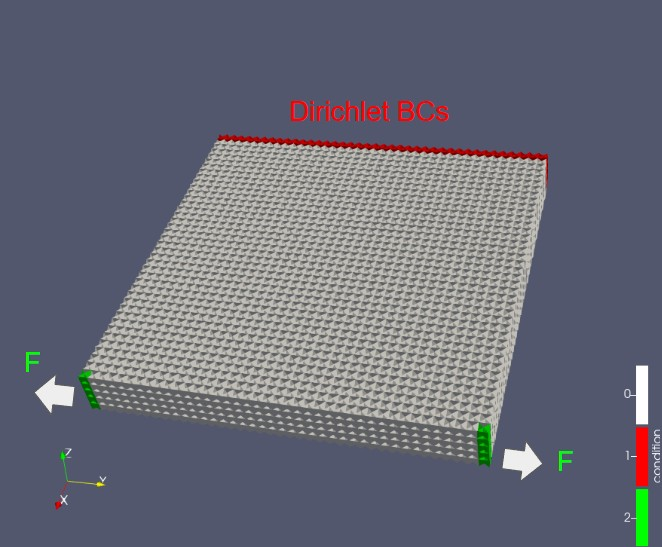
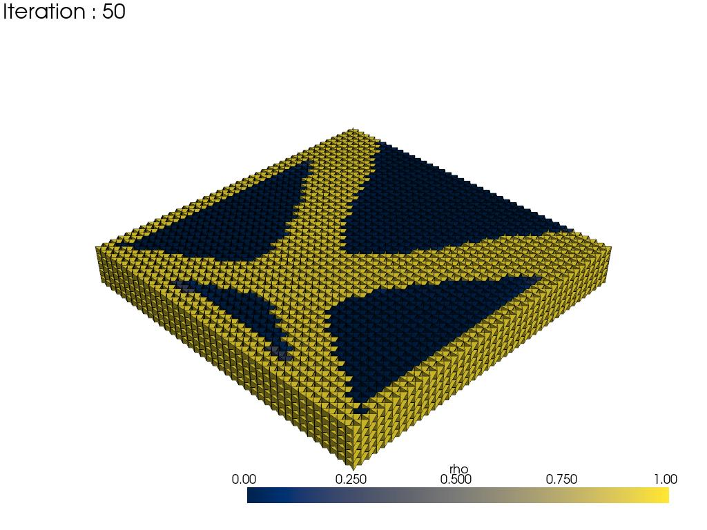

Tutorial Page
Optimization
Below is a minimal working example that performs a topology optimization. This will run a compliance minimization with OC method.
Optimizer Configuration, and Run
import sktopt
cfg = sktopt.core.optimizers.LogMOC_Config(
vol_frac=0.6,
max_iters=40,
record_times=40,
export_img=True
)
optimizer = sktopt.core.LogMOC_Optimizer(cfg, mytask)
optimizer.parameterize()
optimizer.optimize()
But before running the optimization, we need to set up the task configuration and the design variables.
Task Definition
Shape modeling and its basis function
import skfem
import sktopt
x_len = 8.0
y_len = 8.0
z_len = 1.0
mesh_size = 0.2
mesh = sktopt.mesh.toy_problem.create_box_hex(
x_len, y_len, z_len, mesh_size
)
e = skfem.ElementVector(skfem.ElementHex1())
basis = skfem.Basis(mesh, e, intorder=2)
Load Basis from Model File
import skfem
import sktopt
mesh_path = "./data/model.msh"
basis = sktopt.mesh.loader.basis_from_file(mesh_path, intorder=3)
Task Configuration
dirichlet_nodes = sktopt.mesh.utils.get_nodes_indices_in_range(
basis.mesh, (0.0, 0.05), (0.0, y_len), (0.0, z_len)
)
dirichlet_dir = "all"
F_nodes_0 = sktopt.mesh.utils.get_nodes_indices_in_range(
basis.mesh, (x_len, x_len), (y_len, y_len), (0, z_len)
)
F_nodes_1 = sktopt.mesh.utils.get_nodes_indices_in_range(
basis.mesh, (x_len, x_len), (0, 0), (0, z_len)
)
F_nodes = [F_nodes_0, F_nodes_1]
F_dir = ["u^2", "u^2"]
F = [-100, 100]
design_elements = sktopt.mesh.utils.get_elements_in_box(
mesh,
(0.0, x_len), (0.0, y_len), (0.0, z_len)
)
mytask = sktopt.mesh.task.TaskConfig.from_nodes(
E0,
nu,
basis,
dirichlet_nodes,
dirichlet_dir,
F_nodes,
F_dir,
F,
design_elements
)
Results and Visualization
Results and Visualization
The results of the optimization are stored in the directory specified by cfg.dst_path. For example, it contains visualizations of the density distribution, as well as graphs showing the evolution of various parameters during the optimization process, such as the density field, volume fraction, and sensitivity values.
 {kind=link}
{kind=link}